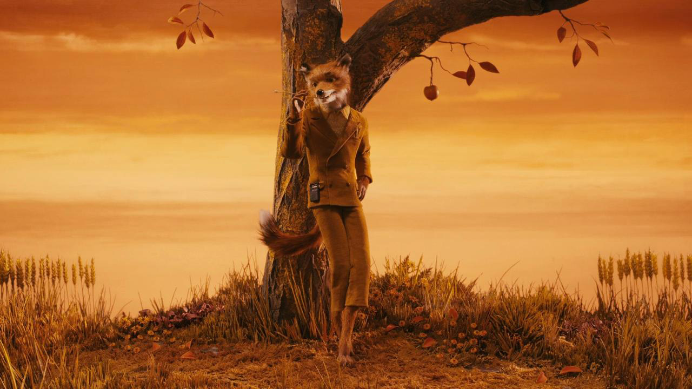

Après des études à la St. John's High School de Houston, Wes Anderson obtient une licence de philosophie à l'Université du Texas. Passionné de cinéma, il s’amuse à réaliser des courts métrages avec sa caméra Super 8 et s’initie au montage. Malgré sa vocation cinématographique, il refuse d’étudier le cinéma à l'Université Columbia et se lance dans l'écriture et la réalisation d'un petit film de moins de quinze minutes. En 1996, il le développe en long-métrage intitulé Bottle Rocket et fait appel à Luke et Owen Wilson pour interpréter les premiers rôles. Depuis ce projet, les frères Wilson entretiennent une relation privilégiée avec Wes Anderson. Luke joue dans plusieurs de ses films tandis qu'Owen agit à la fois en tant que co-scénariste et acteur comme dans Rushmore (1998). Très bien accueilli par la critique, ce deuxième film impose son réalisateur comme l'un des nouveaux espoirs du cinéma indépendant américain. Il marque également sa première collaboration avec Bill Murray qui devient son acteur fétiche.
En 2001, le comédien est à l'affiche de La Famille Tenenbaum, dont les membres excentriques sont campés par Gene Hackman, Anjelica Huston, Ben Stiller et Gwyneth Paltrow. En 2005, il est dans La Vie aquatique un plongeur dépressif aux prises avec un requin jaguar et dont le look n'est pas sans rappeler le commandant Cousteau.
Dans la lignée de ses films à l'univers "mélancomique" qui s'intéressent en particulier aux relations familiales, Wes Anderson réalise deux ans plus tard A bord du Darjeeling Limited et met en scène deux amis et collaborateurs fidèles, Jason Schwartzman et Owen Wilson, auxquels il associe un nouveau venu dans son univers décalé : Adrien Brody. Cette comédie dramatique qui nous embarque en Inde s'ouvre sur un court métrage intitulé Hôtel Chevalier tourné en 2005, et dans lequel joue Natalie Portman.
En 2010, Wes Anderson se lance dans l'animation et réalise Fantastic Mr. Fox, un long-métrage en stop-motion qui est à l'origine une adaptation du livre homonyme de Roald Dahl. Anderson ne manque pas d'intégrer sa touche personnelle en brossant un portrait chic et élégant du renard (doublé par George Clooney). Nommée aux Oscars et aux Golden Globes, cette oeuvre dévoile un nouveau talent chez son réalisateur, qui reçoit le Cristal du Meilleur long métrage au festival international du film d'animation d'Annecy. Il revient au film live en 2012 avec Moonrise Kingdom, un conte initiatique aux couleurs délavées qu'il co-écrit avec Roman Coppola. Il surprend à nouveau avec un casting éclectique composé de Bruce Willis, Edward Norton et Tilda Swinton, sans oublier son collaborateur de longue date Bill Murray, pour un long-métrage assurant l'ouverture de la 65e édition du Festival de Cannes.
En 2014, c'est un autre festival de cinéma de renom, celui de Berlin, qui lui fait confiance en ouvrant sa 64ème édition avec The Grand Budapest Hotel. Wes Anderson y fait défiler une galerie de personnages espiègles et hauts en couleur, interprétés à nouveau par un prestigieux casting parmi lequel on retrouve les Français Mathieu Amalric et Léa Seydoux. Huit ans après Fantastic Mr. Fox, le cinéaste pop se frotte une nouvelle fois à la stop-motion grâce à L'Île aux chiens. Cet hommage à la culture et au cinéma japonais se paie un casting vocal imposant aussi bien en version originale (Bryan Cranston, Frances McDormand, Scarlett Johansson, ...) qu'en version française (Vincent Lindon, Isabelle Huppert, Louis Garrel, Jean-Pierre Léaud entre autres).
Source: AlloCine
